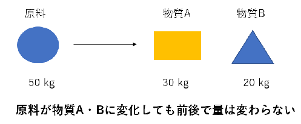
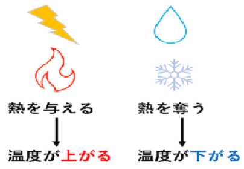

・物質収支（マスバランス）
製品や不純物が原料に対しどれくらいできたかを解析する手法です。原料を50kg投入して製品を造った場合を例に考えます。原料は製品となったもの、原料のまま残ったもの、不純物となったものに分かれます。そして、どれかが外に捨てられない限りはこれらの合計は原料と同じ50kgとなります。この法則を利用し、原料から製品や不純物がどれくらいできたかを解析します。

・熱力学
設備を正常に起動するには熱（エネルギー）を適切に使用しなければなりません。例えば加熱して使用する装置があれば熱源（蒸気や電気）をどれぐらい供給すればよいかを計算します。また、化学反応で熱が発生する場合、何もしなければ装置の温度はどんどん上昇していき、異常高温となって装置が故障します。これを防ぐために熱を取り除く冷媒（冷水など）をどれくらい供給すればよいか計算します。
ここで紹介したトピックスで実際にどんな計算をしているか知りたい、という方はこちらのページもご覧ください。化学工学を全く知らないという方でもわかるような身近な例を題材にしています。